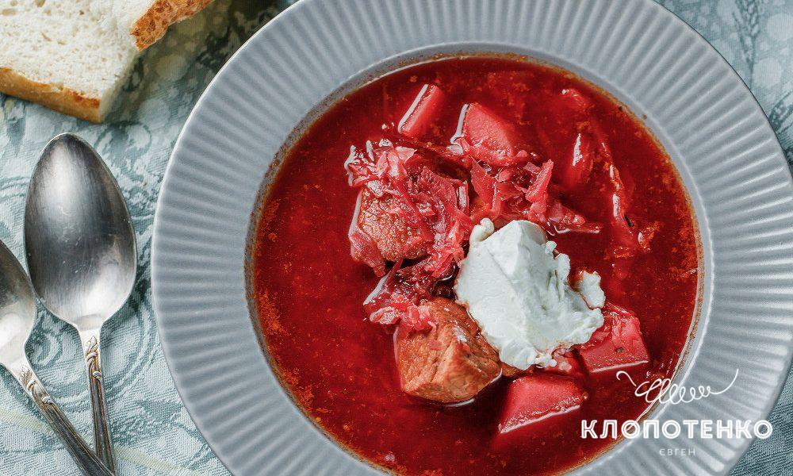
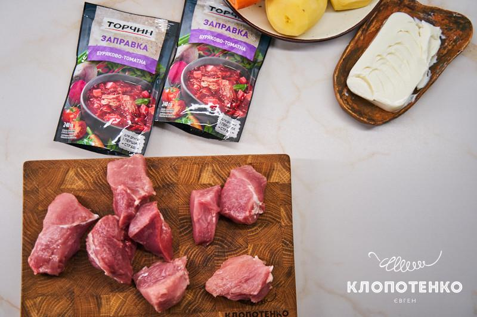

Швидко,але традиційно смачно. Класичний борщ з томатно-буряковою заправкою
Берете ложку насичено густого борщу, закушуєте свіженьким хлібом з салом, часником або гірчицею і нехай всі справи зачекають. Ми впевнені, що у кожної родини є свій фірмовий сімейний рецепт борщу, який передається з покоління в покоління. Приготування борщу – особливий ритуал і на це витрачається не одна година. Але буває, що його хочеться тут і зараз. Сил терпіти немає. Саме для таких випадків пропонуємо використати томатно-бурякову заправку від Торчин, яка повністю замінить етап із засмажкою, а ще збагатить смак борщику та зробить його колір насичено-бордовим, щоб він відповідав всім вимогам «українського справжнього». А ще в умовах вимкнення електроенергії, заправка – справжня знахідка. Пропонуємо мати її завжди в холодильнику. Ну що, розігрався апетит? Тоді нумо готувати!
Поради з приготування борщу
Для приготування борщу ми обрали свинину. Якщо ви хочете більш пісний варіант першої страви, використайте індичку, курятину або яловичину. Основне – зачистьте м’ясо від плівок, щоб воно було максимально м’яким. Хоча у нас без імпровізації не обійшлося. В бульйон ми додали три цибулини, щоб смак був солодкуватим. Пропонуємо і вам так зробити. Картоплю беріть із середнім вмістом крохмалю, тоді вона добре триматиме форму, але при цьому буде ніжною на смак.
Орієнтуйтеся на наші поради, використовуйте якісну заправку і будьте певні, вам сподобається.
Як приготувати борщ з томатно-буряковою заправкою
Інгридієнти
- 350-400 г свинини (лопатка або задня частина)
- 1 морква
- 3 цибулини
- 2 горошини чорного перцю
- 2 горошини духмяного
- 400 г білокачанної капусти
- 4-5 картоплин
- 2-3 ст. л. соняшникової олії
- 1 паковання заправки до борщу буряково-томатної від Торчин
- 2,5-3 л води
- 200 г крем-сиру або сметани (для подачі)
Борщ з томатно-буряковою заправкою: покроковий рецепт
-
Зачистьте від плівок 350-400 г свинини. Поріжте на великі порційні шматочки.
 -
Пательню розігрійте з 2-3 ст. л. соняшникової олії, перекладіть м'ясо та добре підсмажте його з усіх боків до рум’яної скоринки. Ми на це витратили 10 хвилин.
-
Перекладіть підсмажені шматочки в каструлю, додайте 3 цибулини, розрізані хрест навхрест, одну почищену моркву розрізану навпіл та по 2 горошини духмяного і чорного перцю. Залийте 2,5-3 л води та варіть 30 хвилин, періодично знімаючи пінку ложкою.
-
Очистьте 4-5 картоплин та наріжте однаковими середніми шматочками, а 400 г білокачанної капусти посічіть дрібною соломкою. Вийміть з бульйону цибулю та моркву і перекладіть порізані овочі. Додайте половину буряково-томатної заправки від Торчин. Варіть до готовності картоплі. Ми на це витратили 20 хвилин.
-
Додайте заправку, яка залишилася, посоліть до смаку та проваріть ще 5 хвилин. Зніміть борщ з вогню, дайте настоятися 10 хвилин.

-
Подавайте зі сметаною чи з крем-сиром. А ще посипте зверху свіжопосіченою зеленню.